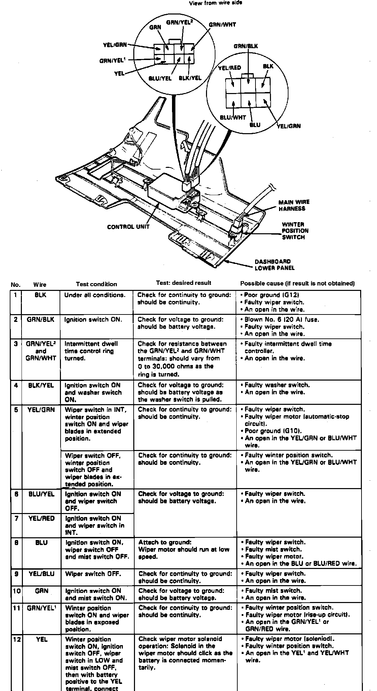

<!DOCTYPE html>
<html>
  <head>
    <title>Wiper Control Module: Testing and Inspection — 1989 Acura Legend Coupe V6-2675cc 2.7L SOHC FI Service Manual | Operation CHARM</title>
    <meta name='description' content="Detailed repair manual for the 1989 Acura Legend Coupe V6-2675cc 2.7L SOHC FI.">
    <link rel='stylesheet' href="../style.css">
    <meta name='viewport' content='width=device-width, initial-scale=1.0' />
  </head>
  <body>
    <div class='theme-colors header'>
      <div class='branding'><b>Operation CHARM</b>: Car repair manuals for everyone.</div>
<div class=breadcrumbs><a class='breadcrumb-part' href="../">Home</a> <b>&gt;&gt;</b> <a class='breadcrumb-part' href="../Acura/">Acura</a> <b>&gt;&gt;</b> <a class='breadcrumb-part' href="../Acura/1989/">1989</a> <b>&gt;&gt;</b> <a class='breadcrumb-part' href="../index.html">Legend Coupe V6-2675cc 2.7L SOHC FI</a> <b>&gt;&gt;</b> <a class='breadcrumb-part' href="0.html">Repair and Diagnosis</a> <b>&gt;&gt;</b> <a class='breadcrumb-part' href="0.html#Wiper%20and%20Washer%20Systems/">Wiper and Washer Systems</a> <b>&gt;&gt;</b> <a class='breadcrumb-part' href="2129.html">Wiper Control Module</a> <b>&gt;&gt;</b> <a class='breadcrumb-part' href="8306.html">Testing and Inspection</a></div></div>
<div class='main'>
<h1>Wiper Control Module: Testing and Inspection</h1><h3>�F�Fig. 12 Control Unit Connectors:</h3><div class='oxe-image'></div><br><br><br><br><span class='indent-1'>&#09;</span>1.<span class='indent-5'>&#09;</span>Remove lower instrument panel cover.<br><span class='indent-1'>&#09;</span>2.<span class='indent-5'>&#09;</span>Disconnect <a>control unit</a> six and eight pole connectors, <b>Fig. 12.</b><br><span class='indent-1'>&#09;</span>3.<span class='indent-5'>&#09;</span>Check continuity between black terminal and ground, continuity should be indicated, if not, poor ground, faulty wiper switch or an open wire is indicated.<br><span class='indent-1'>&#09;</span>4.<span class='indent-5'>&#09;</span>With ignition switch On, check green/black terminal for voltage to ground, battery voltage should be indicated. If not, blown No. 6 fuse, faulty wiper switch or an open wire are indicated.<br><span class='indent-1'>&#09;</span>5.<span class='indent-5'>&#09;</span>With intermittent dwell time control ring tuned, check for resistance between green/yellow 2 and green/white terminals, resistance should vary from 0-30,000 ohms as ring is tuned, if not, faulty intermittent dwell time controller or an open wire is indicated.<br><span class='indent-1'>&#09;</span>6.<span class='indent-5'>&#09;</span>With ignition switch and washer switch On, check black/yellow terminal for voltage to ground, battery voltage should be indicated as washer switch is pulled, if not, faulty washer switch or an open wire is indicated.<br><span class='indent-1'>&#09;</span>7.<span class='indent-5'>&#09;</span>With wiper switch in INT, winter position switch On and wiper blades extended in position, check for continuity between yellow/green to ground, continuity should be indicated, if not, faulty wiper switch, wiper motor, poor ground or an open in yellow/green or blue/white wire is indicated.<br><span class='indent-1'>&#09;</span>8.<span class='indent-5'>&#09;</span>With wiper switch Off, winter position switch Off and wiper blades extended in position, check for continuity between yellow/green to ground, continuity should be indicated, if not, faulty wiper position switch or an open in yellow/green or blue/white wire is indicated.<br><span class='indent-1'>&#09;</span>9.<span class='indent-5'>&#09;</span>With ignition switch On and wiper switch Off, check terminal blue/yellow for voltage to ground, battery voltage should be indicated, if not, faulty wiper switch or an open wire are indicated.<br>10.<span class='indent-5'>&#09;</span>With ignition switch On and wiper switch INT, check terminal yellow/red for voltage to ground, battery voltage should be indicated, if not, faulty wiper switch or an open wire are indicated.<br>11.<span class='indent-5'>&#09;</span>With ignition switch On, wiper switch Off and mist switch Off, connect blue terminal to ground, wiper motor should operate at low speed, if not, faulty wiper switch, mist switch, wiper motor or an open blue or blue/red wire are indicated.<br>12.<span class='indent-5'>&#09;</span>With wiper switch Off, check for continuity between yellow/blue wire and ground, continuity should exist, if not, faulty wiper switch or a open wire are indicated.<br>13.<span class='indent-5'>&#09;</span>With ignition switch and mist switch On, check green terminal for voltage to ground, battery voltage should be indicated, if not, faulty mist switch or an open wire are indicated.<br>14.<span class='indent-5'>&#09;</span>With winter position switch On and wiper blade in exposed position, check green/yellow terminal for voltage to ground, battery voltage should be indicated, if not, faulty winter position switch, wiper motor or an open green/yellow or green/red wire are indicated.<br>15.<span class='indent-5'>&#09;</span>With winter position switch On, ignition switch Off, wiper switch in LOW and mist switch Off, the with battery positive to yellow terminal, connect negative to ground momentarily, check wiper motor solenoid operation, solenoid should click as battery is connected, if not, faulty wiper motor solenoid, faulty winter position switch or an open in yellow and yellow/white wire is indicated.<br>16.<span class='indent-5'>&#09;</span>With ignition switch On, wiper switch Off and wiper blades in exposed position, check terminal blue/white for voltage to ground, battery voltage should be indicated, if not, faulty wiper motor or an open wire are indicated.<br>17.<span class='indent-5'>&#09;</span>If all tests are as indicated, replace <a>control unit</a>.<br><br></div>
<div class="theme-colors footer">
  <i>pro multis</i> · <a href="../about.html">About Operation CHARM</a>
</div>
<script src="../script.js"></script>
</body>
</html>
